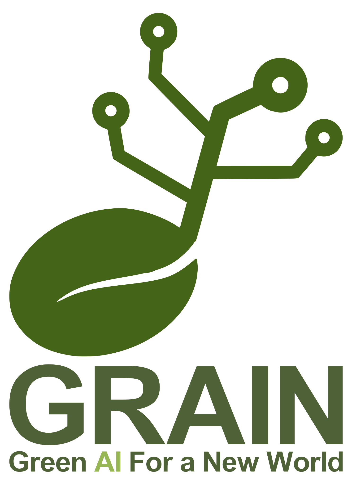

Inter-institutional research group on artificial intelligence applied to climate crisis mitigation created in 2023 by professors Claudio Miceli, Leandro Santiago and Leopoldo Lusquino. One of the objectives of this group is to provide Machine Learning models that can be useful for researchers and companies in the areas of meteorology, environmental sciences, electrical engineering, production engineering, among others, that deal with tackling the climate crisis. Other research topics include, but not limited to, the followings:
| PROJECTS | DESCRIPTION |
|---|---|
| Development of ML models for causal analysis and prediction of epidemiological scenarios worsened by climate change | This project focuses on developing machine learning models to analyze and predict epidemiological scenarios that are aggravated by the impact of climate change. The aim is to understand how climate factors, such as rising temperatures, extreme weather events, and shifting environmental conditions, affect the prevalence and severity of diseases, particularly in vulnerable populations. By applying advanced ML techniques, the project will seek to identify causal relationships between climate variables and health outcomes, enabling the development of predictive models that can forecast future epidemiological risks and inform public health interventions. This initiative is directly linked to the broader research project "Analysis of spatial correlation by deep learning of morbidity and mortality rates with indicators associated with climate and socioeconomic changes" (CNPq Process: 444734/2023-6), led by Prof. Darllan Collins at São Paulo State University. This collaboration aims to integrate spatial and socioeconomic data with deep learning models, furthering the understanding of how climate and social factors contribute to health crises, particularly in regions susceptible to the adverse effects of climate change. |
| Weightless neural networks for hyperdimensional computing in climate change applications | This project aims to develop energy-efficient models for hyperdimensional computing (HDC), a technique using high-dimensional binary vectors (hypervectors) for cognitive tasks. Traditional HDC models require large hypervectors, which can be inefficient for low-power platforms. To address this, we will integrate weightless neural networks (WNNs) and Bloom filters as associative memory systems, reducing the dimensionality of hypervectors. The project focuses on applying these innovations to climate change monitoring, enabling faster, more efficient data processing for detecting patterns, forecasting, and supporting early warning systems in environmental applications. |
| Digital Twins for Monitoring Environmental Variables | This project focuses on developing digital twins to enhance the monitoring and prediction of environmental variables. By leveraging embedded AI models in sensors and predictive layers, we aim to create sophisticated virtual replicas (digital twins) of environmental systems. These digital twins will be used to forecast anomalous events such as extreme weather conditions, diagnose changes in environmental variables, and track worsening pollution levels. The goal is to improve the accuracy and timeliness of environmental forecasts and real-time monitoring (nowcasting). Through advanced AI and data integration, the project will enable more effective responses to environmental changes and extreme events, providing critical insights for better management and mitigation strategies. |